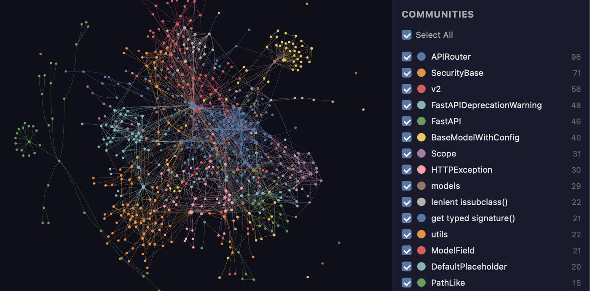

Graphify
A map of your codebase that AI coding assistants can read and query.
Scans your project's files and draws a connected map so your AI coding assistant finds the right code faster - like giving it a table of contents instead of making it read every page.

How does it work?
Your AI coding assistant wastes time reading the wrong files because it doesn't know how your codebase fits together.
You run one command, and the assistant can query the map from then on.
Type /graphify . in Claude Code, Cursor, or Codex.
Your project's code, documents, database schemas (a type of data blueprint), and config files.
A Python web app with 200 files, its README, and its database schema.
Graphify reads every file, finds the connections between them, and builds a queryable map.
- Parses all code locally using tree-sitter (a code-reading engine) - nothing leaves your machine.
- Maps imports, function calls, inheritance and cross-file references into a graph with labeled edges.
- Finds 'god nodes' (the most-connected pieces) and communities (clusters of related code).
- Saves the map as graph.json, an interactive graph.html, and a written report.
Your AI assistant reads the map and goes straight to the right files.
- An interactive graph you can explore in a browsergraph.html shows 15 communities in a FastAPI project, with APIRouter as the most-connected node (96 edges).
- A queryable map for your AI assistantAsk 'what connects FastAPI to ModelField?' and get the exact path, hop by hop, with file and line numbers.
- A written architecture reportGRAPH_REPORT.md lists the communities, god nodes, and how the code clusters together.
What changes for me?
Without it
- Your AI assistant reads dozens of files to understand how three components relate - burning through its working memory.
- You answer the same 'where is this defined?' questions every time someone new joins the project.
- Architecture knowledge lives in one person's head, and it leaves when they leave.
With it
- The assistant queries the graph and jumps straight to the right file and line.
- New team members explore an interactive map of the codebase instead of asking around.
- Architecture is documented in a graph that updates every time you rebuild it.
How hard is it to try?
Effort
- Install the tool: run
uv tool install graphifyy(note the double y) orpipx install graphifyy. Needs Python 3.10 or later. - Register it with your AI assistant: run
graphify install, then type/graphify .in Claude Code, Cursor, or Codex. - Explore the result: view
graph.htmlin a browser to see the interactive map, or readGRAPH_REPORT.mdfor the written summary. Full docs.
What it takes on your computer
- Space on disk
- About 5 MB (the Python package is 1.7 MB for the wheel, 2.9 MB for the source). Dependencies add more.
- Memory while it runs
- no data found
- Runs on
- macOS, Linux, and Windows. Needs Python 3.10 or later. Code-only graphs run locally with no API key. Document and image parsing needs a configured AI model or a local Ollama instance.
Paste this into Claude Code. It runs your safety scan first, then a 10-minute test.
/skillspector https://github.com/Graphify-Labs/graphify uv tool install graphifyy && graphify install /graphify .
Should I?
Great if you...
- Teams with large, tangled codebases where the AI assistant keeps reading the wrong files.
- Developers onboarding to an unfamiliar project who need a map of how it fits together.
- Anyone who wants to see their codebase as an interactive graph they can explore.
Skip it if...
- Your project is small and well-organized - the graph won't save much time.
- You need production-grade documentation - Graphify maps code structure, it doesn't write docs.
- You want a turnkey solution - the graph needs rebuilding when the code changes.
Instead, you could look at
- Graphicle (Rust port)A Rust rewrite of Graphify with added memory for coding agents. 48 points on HN, Oct 14.
- AiderAI pair programming tool with its own repo-mapping approach. Different philosophy: edits code directly.
Is it safe?
- Security advisories: 1GitHub's advisory list, checked Oct 23, all fixed in a published release
- Searches for CVEs, vulnerabilities, malware and scams10 results read, including the national CVE database: nothing found
- Are the stars earned?134K stars, 365 contributors, 2.5K commits. findarepo: looks organic
Watch out for
- Commercial upsell. Graphify Cloud is a paid hosted version. The open-source engine is free, but the company behind it (YC S26) needs revenue, and some features may move behind a paywall.
- 903 open pull requests. A large backlog of unmerged contributions suggests the core team may not keep up with community input.
- Graph goes stale. The map reflects the code when you last ran the tool. If you change the code without rebuilding, the graph is out of date.
- Benchmark claims are self-reported. The 67-73% token savings come from the project's own tests. Independent benchmarks have not confirmed them.
Who's using it, and for what?
Graphify is 203 days old. Most coverage is vendor-adjacent or blog reviews, not production case studies.
Kevin Kinnett
Tested Graphify with Claude Code on a mid-sized project to compare AI navigation speed.
Found useful architectural insights but said the graph did not consistently outperform Claude Code's normal navigation.
Graphify Review: Is the Codebase Knowledge Graph Worth It?, Oct 15Jeremy Stover
Ran Graphify on its own codebase as a test.
Completed the graph in about 15 seconds and praised the deterministic approach over search-based alternatives.
Graphify Review: Is the Codebase Knowledge Graph Worth It?, Oct 15
Who's talking about it
- CodeConductorGraphify Review: Is the Codebase Knowledge Graph Worth It?
- WavectGraphify Review: Codebase Knowledge Graph
- Augment CodeGraphify: Knowledge Graphs for AI Coding
- findarepoGraphify-Labs/graphify trending #7 in AI Agents
Sources
- Graphify GitHub repo, Oct 23
- Graphify website, Oct 23
- Graphify docs, Oct 23
- graphifyy on PyPI (v0.9.94), Oct 22
- findarepo listing, Oct 23
- CodeConductor review (real users: Kinnett, Stover), Oct 15
- Wavect review, Oct 15
- Augment Code overview, Oct 23